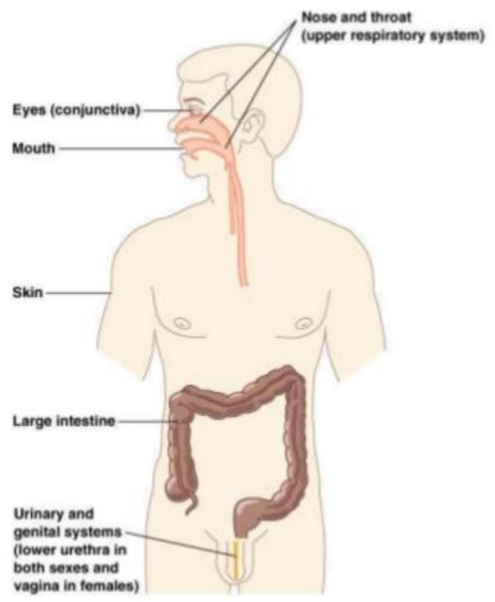

Normal Flora
CLS 212: Medical Microbiology
Relationships between Organisms
- Symbiosis: Permanent association between two different organisms.
- Neutralism: Two organisms living together, and neither is affected by that.
- Mutualism: Two organisms living together, and both benefit from that.
- Commensalism: Two organisms living together, one is benefited and the other is not been affected.
- Parasitism: Two organisms living together, one is benefited "called parasite" and the other is harmed "called host".
- Synergism: Sometimes, two (or more) microorganism may work together "team up" to produce a disease that neither could cause by itself.
What are Normal Flora?
- Normal flora are microorganisms (bacteria, fungi, protozoa, and viruses), mostly bacteria that continuously inhabited the human body (Resident Normal Flora).
- Under normal conditions in a healthy human they are harmless and may even be beneficial.
- Also called Commensals i.e. organisms that dine together or Microflora.
Stuff about Normal Flora
- A fetus is sterile when born (No Normal Flora), then newborn start having the normal flora from its mother, air, food and the environment.
- Our internal organs are sterile like the spleen, liver, pancreas, bladder, CSF, and blood unless during infection.
- Normal flora differ from one human to another depending on age, diet, and geographic habitat.
- When the number of resident normal flora is greatly reduced, opportunistic microbes can easily cause infections in these areas e.g. Candida albicans that cause candidiasis.
Normal Microbiota and the Host:
Locations of normal microbiota on and in the human body
Why Should We Know About Normal Flora?
We all should know about the types and distribution of normal flora in our bodies because:
- It gives us better understanding of the possible infections that result from injury to a specific body site.
- As well as the possible sources and significance of microorganisms isolated from the site of an infection.
Transient Normal Flora
- Normal flora that are temporarily living on and within humans.
- The transient microbes living in the external environment are attracted to moist, warm body areas.
Why are these microbes temporary??
- They may be washed from external areas by bathing.
- They may not be able to compete with resident normal flora.
- They may be killed by substances produced by the resident normal flora.
- They may not survive in the acidic or alkaline pH of the site.
- They may be flushed away by bodily secretions like tears, sweat, oil, urine, feces,..).
Microflora of the SKIN
The resident micoflora of the skin consist primerly bacteria and fungi
Resident bacteria of the skin can be in any layer of the skin.
Skin can acquire any transient bacteria from the environment but it either get washed off or die because the skin is dry, has acidic pH, and produce sweat and oil.
SKIN
-
Aerobic Bacteria:
- Present in the outer layer of skin.
- Staphylococcus epidermidis (accounts 90%) + Staphylococcus aureus.
-
Anaerobic Bacteria: (More than Aerobic bacteria)
- Present in the deeper skin layers, hair follicles, and sweat & sebaceous glands.
- Propionibacterium acnes.
- Skin normal flora are generally harmless but it might cause bloodstream infections if skin was penetrated.
HCWs
HCWs must be particularly carful to keep there skin and clothing free of transient microbes as possible to prevent personal infections and to avoid transferring pathogen to patient
Microflora of the EYES
- The conjunctiva of the eye has primarily S. epidermidis, followed by S. aureus, C. diphtheroids, and S. pneumoniae.
- Some skin normal flora are also present but at fewer amounts.
Tears (Lysozyme enzyme), mucus, and oil will protect the conjunctiva of the eye from colonization by more bacteria.
Microflora of the EARS
- The middle ear and inner ear: are usually sterile.
- The outer ear and the auditory canal: contain the same normal flora of the skin.
When the person coughs, sneezes, or blows his nose, these microbes may move into the middle ear where they cause infection.
Respiratory Tract
Upper Respiratory Tract:
- Nose and throat have Many microorganisms. Some are normal flora, some are opportunistic, and others are carried like C. diphtheroids.
- Nasopharynx: Streptococcus pneumoniae
In immune compromised or elderly it might cause acute bacterial pneumonia.
Lower Respiratory Tract:
Is usually sterile because the mucous membranes of the lungs remove any microbes.
Oral Cavity (Mouth)
They have both aerobic and anaerobic bacteria. The most common ones are: C. diphtheroides, S. aureus, and S. epidermidis.
- Also yeasts, molds, protozoa, and viruses can be living in the mouth.
Teeth and Gengiva: Streptococcus mutans
- Poor dental hygiene help bacteria to grow and cause dental caries, gingivitis,...
- After dental surgeries, there might be a risk of bloodstream infection that might cause endocarditis.
Gastrointestinal Tract
Microflora of the Gastrointestinal Tract
- Stomach: Only few bacteria are present in the stomach due to gastric enzymes and acidic pH .
- Small intestine: Only few normal flora are present in the upper part of small intestine because bile kills them. Lower parts have more no. of normal flora.
-
Large intestine: Has more bacteria than any other part of the body. 99% of normal flora in the large intestine are anaerobic Bacteroides spp.
- Also many fungi, protozoa, and viruses can live there.
- Many of the normal flora are opportunistic i.e. if they move to other areas e.g. E.coli cause urinary infection.
Microflora of the Urogenital Tract
Urinary Tract
- Kidneys, Ureters and Urinary Bladder: are sterile.
- Lower Urethra and external opening: bacteria, yeast, and viruses. Has the same bacteria present on the skin.
Genital Organs
- Male and female genitals: are sterile except vagina.
- Vagina: Lactobacillus spp. keeps the pH acidic to protect the vagina from opportunistic infections e.g. fungal vaginitis (Candida albicans) or bacterial vaginosis (Bacteroides spp., Gardnerella vaginalis).
Beneficial Functions of Normal Flora
- Protect our organs and systems that are in direct contact with the external environment from invading pathogens. Some normal flora produce substances that kills pathogens and others compete for with them for nutrients.
- In newborns, normal flora stimulates the development of immune system.
- Normal flora of the gut provides important nutrients such as Vitamin K which aid in digestion and absorption of nutrients.
Harmful Effect of Normal Flora
- When the normal flora are displaced from their normal site of the body e.g. bloodstream infections by S. epidermidis.
- When potential pathogens gain a competitive advantage due to diminished populations of harmless competitors e.g. C. difficile growing in the gut after antibiotic therapy.
- When harmless, commonly ingested food substances are converted into carcinogenic derivatives by bacteria in the colon e.g. sweetener cyclamate.
- When individuals are immunocompromised, normal flora can overgrow and become pathogenic.